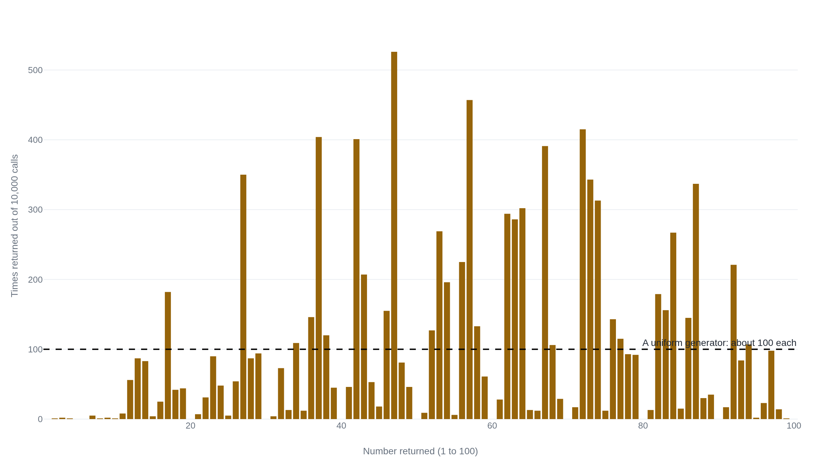

Ask a chatbot for a random number and it says 7
A chatbot has no random-number generator to reach for, so it draws the answer from a probability distribution learned from human text, which is lopsided the same way people are.
Why this matters
Type "give me a random number between 1 and 10" into a chatbot and there is a good chance it answers 7. Try again in a fresh chat and it often answers 7 again. People lean on these tools to shuffle, to sample, to seed a simulation, and a number that keeps landing on the same value is not doing that job. The strange part is that the answer is both wrong and specific: not noise, but a favorite. This lesson works backward from that favorite to the part of the system that produces it. If the model is not rolling a die, then what is it doing when it hands you a 7?
- 01
- The instant a model writes a token, it becomes fact: how a model builds an answer one token at a time, each token predicted from the ones before it.
- 02
- Two answers to one prompt diverge at a single draw: what the temperature setting does to the odds a model draws its next token from.
7 comes up four times in five
The favorite is measured. Javier Coronado-Blázquez asked six models for a random number 75,600 times in all, across seven languages, six temperature settings and three ranges. For the range 1 to 10, three of them, GPT-4o-mini, Phi-4 and Gemini 2.0, answered 7 in roughly 80% of tries. The answers that were not 7 clustered in 4 through 8 and almost never landed on 1 or 10.1 Ask for a number between 1 and 5 and the same models concentrate on 3.1
The pattern gets sharper the wider the range. The developer exmergo called OpenAI's gpt-4.1 ten thousand times for a number between 1 and 100 and counted every answer. A fair generator would return each number about 100 times. Instead 47 came back 526 times, 37 came back 404 times and 42 came back 401 times, each four to five times its fair share. A goodness-of-fit test against a flat distribution returned a chi-square of 15,604 against 99 degrees of freedom, a value whose probability under fairness rounds to zero.2 The clearest tell sits at the round numbers. Every multiple of 10 except 10 itself, meaning 20, 30, 40 and the rest up to 100, was returned exactly zero times in ten thousand calls.2

So this is not too little variation. Some numbers are chosen constantly and others shut out, and the model is not spreading its choices across the range you named.
Nothing inside the model rolls a die
The tempting explanation is that the model picks a number the way a distracted person would: reach into the range, grab one, say it out loud. On that account 7 is just the number it happens to grab. It is worth taking seriously because it is almost right about the output and wrong about the mechanism.
No step in the model reaches into a range and grabs a number. A language model builds its answer one token at a time, and a token is a chunk of text, here just the characters of the number. At each step the model produces a probability over every token in its vocabulary. This is a long list of candidate next pieces of text, each with a number saying how likely it is to come next. For the prompt asking for a number, the token "7" carries a high probability and the token "3" a lower one, and the token for a word like "the" carries almost none. Then a decoder turns that list into one actual token. It has two usual ways to do it. Greedy decoding takes the single highest-probability token every time, which is deterministic. Sampling instead draws one token at random from the list, weighted by those probabilities, so a token twice as likely is drawn about twice as often.3
That draw is the only randomness in the whole path, and it is a draw over tokens weighted by the model's own numbers, not a fresh roll of a fair die. The list it draws from was fixed the moment the model finished computing it. If that list already leans hard on "7," a weighted draw from it leans on 7 too. Why the model does not return the same number every single time, even at one setting, is a separate question about that draw, taken up in a lesson of its own. What matters here is one rung down: the answer is only ever as even as the list the draw is reading from, and that list is the thing to look at next.
Human writing over-picks 7 first
The list of odds is learned. A model sets those probabilities by training on a very large amount of human text, adjusting them to predict what comes next in that text. So the odds it attaches to each number are a compressed record of how often that number follows a request like this one in what people have written. And people, asked for a random number, are not fair either. In a 1976 experiment Michael Kubovy and Joseph Psotka asked people for the first digit that came to mind, and 28.4% said 7, against the roughly 11% a fair choice among 1 through 9 would give. Their reading was that people reach for the answer that will look spontaneous.4 The odd, middle, non-round number feels the most spontaneous, so it gets picked the most.
The same pull shows up in the wider range. A crowdsourced survey run by the science channel Veritasium, which asked roughly 200,000 people for a number between 1 and 100, found the answers piling up on 7, 37, 73 and 77.5 Those human favorites were gathered outside a laboratory, so read them as a rough survey, not a controlled result. Set them beside the model's own favorites for 1 to 100, where 37 and 73 are again among the tallest spikes, and the model's list of odds looks like a record of that human habit.
The record is not a clean copy. The bias belongs to the chat models people actually use, not to language models in general. Peter West and Christopher Potts compared a base model, the raw version before it is tuned to follow instructions, against its aligned chat versions. Measured as distance from fair, the 8-billion base model scored 13.9. Its aligned siblings scored between 52.3 and 129.1, several times further from fair. So the shape starts as an inherited human habit, and the alignment step that makes a model chatty is where much of the 7 preference is added.6 How much of the final shape is inherited and how much is added by that tuning is not settled.
Turning the temperature up does not flatten it
If the odds are lopsided, the obvious lever is the one that governs how adventurously a model draws: its temperature. Turn it up and the model reaches past its top pick more often. But temperature only rescales the list of odds. It never rebuilds it. A lopsided distribution, stretched, is still lopsided. Coronado-Blázquez ran the whole sweep from a low 0.1 up to a high 2.0. Low temperature collapsed every answer onto a single value, and the highest setting added only marginal variety and never came close to fair.1 Just what the temperature knob does to the odds, and why it cannot invent evenness that is not there, is the subject of its own lesson.
The deeper reason no knob helps is that the model has no separate part that samples from a distribution. It has the learned list and the draw, and nothing that says "now produce a fair spread." A study by Minda Zhao, Yilun Du and Mengyu Wang asked eleven current models, GPT-5.2 and Gemini-3-pro among them, to draw a thousand samples from named statistical distributions. The median model passed only 7% of the time, and a temperature sweep did not systematically recover the right spread. Their conclusion is blunt: current models "lack a functional internal sampler."7 Even thinking about it does not help. Coronado-Blázquez watched a reasoning model work through coin flips and dice in its visible scratch-work, then return a biased favorite anyway. Reasoning about randomness in words is not the same as having a source of it.1
Hand the model a real generator and the bias goes
The fix is not a better prompt. It is to stop asking the model to be the generator and let it call one. Jia Gu and colleagues found that the same models that could not sample a distribution directly could name it correctly more than 80% of the time. So they had the models write a short program to do the sampling instead. GPT-3.5, GPT-4 and Claude 2.1 all reached "nearly 100%" on most distributions once the number came from code they ran.8 The random number then comes from the programming language, whose generator was built to be fair, and the model's job shrinks to writing the call. This is what handing a model a tool buys: the work moves to a part of the system that was engineered for it.
That leaves one rung still in shadow. We can see that the odds are lopsided, that human writing is lopsided the same way, and that alignment reworks the shape. What no one can yet trace is the exact path from the training text to the height of the bar over 47. Reading those bars off a trained model is easy; deriving them from what went in is not, and that is left for a later lesson.
The takeaway
The 7 is not a die coming up the same way too often. There is no die. Asked for a number, the model produces a list of odds over its possible next tokens, and a decoder draws one from that list. The only randomness in the path is that single weighted draw. The list is learned from human text, and human text reaches for 7 and its odd, middle, non-round cousins, so the list is lopsided before any draw happens. The alignment that makes a model an assistant then sharpens the lean. Turning up the temperature rescales the list without rebuilding it, so a lopsided list stays lopsided. The one thing that works is refusing the premise: let the model call a real generator, and the fairness comes from the code, not the tokens. So when a chatbot hands you 7, you know what happened. It did not pick a number. It continued your request with the most human-sounding next token, and for a number between 1 and 10 that token is 7.
- 01
- Coronado-Blázquez, "Deterministic or probabilistic? The psychology of LLMs as random number generators": the full sweep across models, languages and temperatures behind the 80% figure for 7.
- 02
- exmergo, "research-chatgpt-guesses-between-1-and-100": the 10,000-call gpt-4.1 experiment with its raw counts published, if you want to sort the bars yourself.
Sources
- arXiv · Javier Coronado-Blázquez, "Deterministic or probabilistic? The psychology of LLMs as random number generators" (2025)
- GitHub · exmergo, "research-chatgpt-guesses-between-1-and-100": 10,000 gpt-4.1 calls for a number in 1-100, with raw counts
- Hugging Face · Transformers documentation, "Generation strategies" (greedy search and sampling)
- Journal of Experimental Psychology: HPP · Michael Kubovy and Joseph Psotka, "The Predominance of Seven and the Apparent Spontaneity of Numerical Choices" (1976)
- Veritasium · "Why is this number everywhere?": a crowdsourced survey of about 200,000 people asked for a number in 1-100
- arXiv · Peter West and Christopher Potts, "Base Models Beat Aligned Models at Randomness and Creativity" (2025)
- arXiv · Minda Zhao, Yilun Du and Mengyu Wang, "Large Language Models Are Bad Dice Players: LLMs Struggle to Generate Random Numbers from Statistical Distributions" (2026)
- arXiv · Jia Gu, Liang Pang, Huawei Shen and Xueqi Cheng, "Do LLMs Play Dice? Exploring Probability Distribution Sampling in Large Language Models for Behavioral Simulation" (2024)